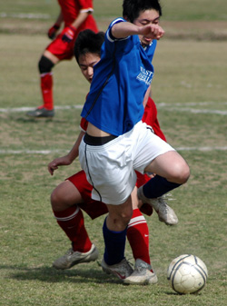

|
Misato, Sun 9th April. What is it about WSG that they have to go a goal down before they snap into action? A sweetly struck half volley in the 5th minute from Jetro's Nakase woke the Geckoes sharply from their slumbers.
WSG settled in and comfortably controlled the remaining 30 minutes of the half and only some poor finishing from the boys in blue prevented the scores going level as the teams went into the interval.
What is it about WSG that they have to go 2 goals down before they......
The energetic Japanese lads started brightly after the break, and within two minutes of the restart they had left WSG with a mountain to climb. A thumping drive pummelled the crossbar and the subsequent rebound fell fortuitously for Furukawa who took his chance and headed into the empty net.
The stunned Geckoes regained their composure and it was not long before they were awarded a penalty after some patient build up play and a careless handball in the area. Pete Exton took responsibility and calmly slotted away the pen providing a much needed lifeline.
The boys in blue turned up the heat and minutes later a pitch perfect Simon Bromwell corner found the head of Andy Drought and the Geckoes were back in it.
Having now got the bit between their teeth WSG brought on wave after wave of attack searching for the winner, and with less than 10 minutes left on the clock, the tenacious Andy Drought forced an untimely error from the Jetro keeper and was rewarded with a simple tap-in to claim the game for the Geckoes.
Three much needed points that may send WSG into the dizzy heights of mid-table obscurity.
Match reporter: Gaz
|